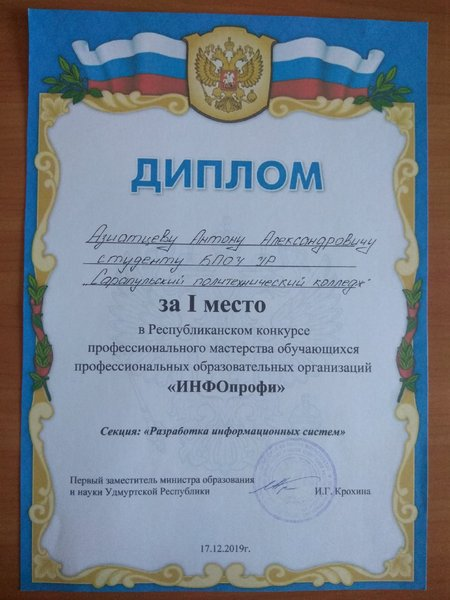
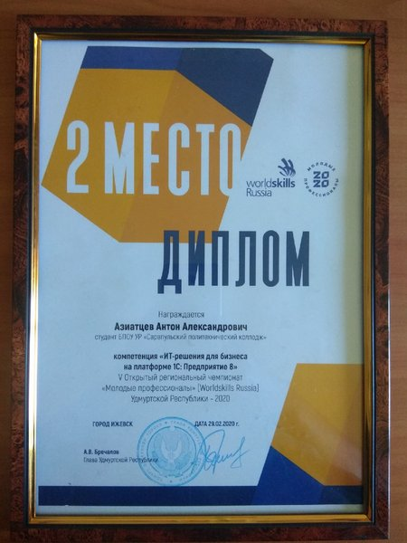

About
Привет, меня зовут Антон, я — опытный Ведущий системный администратор и начинающий DevOps-инженер. Моя работа — это не просто технические задачи, а создание и поддержка высокоэффективных IT-инфраструктур, которые обеспечивают бесперебойную работу бизнеса.Системное администрирование для меня — это искусство управления сложными, распределёнными системами, оптимизация процессов и их автоматизация. Я занимаюсь проектированием и внедрением надёжных инфраструктурных решений, обеспечивая их безопасность, масштабируемость и производительность. Мой опыт охватывает весь спектр задач: от настройки серверов и облачных платформ до автоматизации процессов с использованием современных DevOps-подходов.
Я всегда ищу новые способы повышения эффективности и качества работы, будь то через внедрение новых технологий, улучшение автоматизации или просто оптимизацию существующих решений. Моя цель — создавать и поддерживать инфраструктуру, которая не только работает, но и развивается вместе с бизнесом.
Portfolio


Обязанности:
- Linux Ubuntu, Debian
- Windows Server
- Управление Linux/Windows серверами
- Настройка сети
- Обслуживание ПК
- Онбординги/Офбординги
- Резервное копирование
- SaaS (1C)
Навыки:
- 1C Администрирование (кластеризация, SaaS)
- PostgreSQL
- SSO KeyCloak
- Yandex.Cloud
- K2.Cloud
- Ansible
- Jenkins
- Terraform
- Zabbix
- AWS CLI
- Atlassian (Confluence, Jira)
- Скриптовые языки (powershell, bash)
- VPN (OpenVPN, WireGuard, L2TP, Outline)
- Веб сервера (Apache,Nginx)
- HaProxy